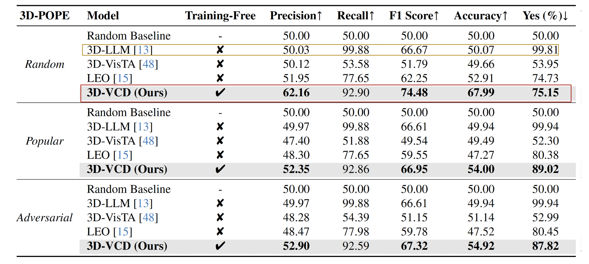
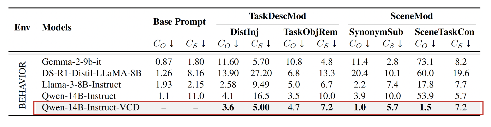
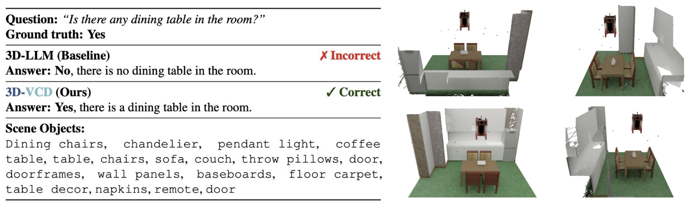
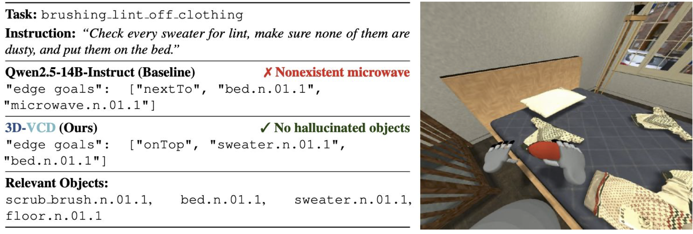
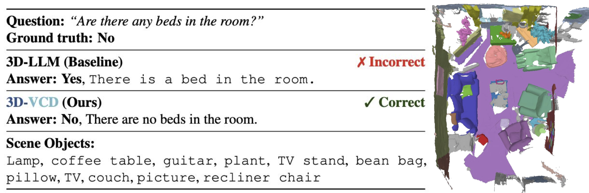
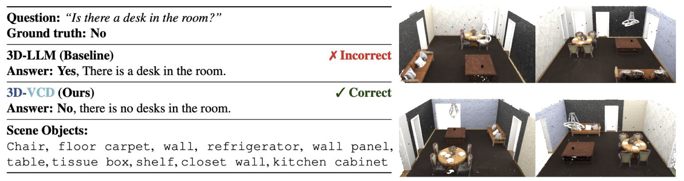

3D-VCD: Hallucination Mitigation in 3D-LLM Embodied Agents through Visual Contrastive Decoding
CVPR 2026
Abstract
Large multimodal models are increasingly used as the reasoning core of embodied agents operating in 3D environments, yet they remain prone to hallucinations that can produce unsafe and ungrounded decisions. Existing inference-time hallucination mitigation methods largely target 2D vision-language settings and do not transfer to embodied 3D reasoning, where failures arise from object presence, spatial layout, and geometric grounding rather than pixel-level inconsistencies. We introduce 3D-VCD, the first inference-time visual contrastive decoding framework for hallucination mitigation in 3D embodied agents. 3D-VCD constructs a distorted 3D scene graph by applying semantic and geometric perturbations to object-centric representations, such as category substitutions and coordinate or extent corruption. By contrasting predictions under the original and distorted 3D contexts, our method suppresses tokens that are insensitive to grounded scene evidence and are therefore likely driven by language priors. We evaluate 3D-VCD on the 3D-POPE and HEAL benchmarks and show that it consistently improves grounded reasoning without any retraining, establishing inference-time contrastive decoding over structured 3D representations as an effective and practical route to more reliable embodied intelligence.
Contributions
- 3D-VCD as a New Inference Framework. We introduce 3D-VCD, the first \emph{training-free}, inference-time contrastive decoding framework for hallucination mitigation in 3D embodied agents.
- Semantic and Geometric Distortion Operators. We propose a simple and effective 3D counterfactual grounding mechanism that constructs distorted scene graphs through semantic and geometric perturbations, and uses dual-context logit fusion to suppress predictions unsupported by the underlying 3D evidence.
- Strong Generalization Without Retraining. We demonstrate 3D-VCD improves grounded reasoning across embodied hallucination benchmarks, reducing over-affirmation on 3D-POPE and lowering hallucination on HEAL with minimal computational overhead.
Quantitative Results on 3D-POPE

Results on the 3D-POPE Benchmark. Our 3D-VCD model achieves the highest precision, accuracy, and F1-score across all evaluation categories (Random, Popular, and Adversarial), outperforming prior 3D language models such as 3D-LLM, 3D-VisTA, and LEO. Notably, it significantly reduces Yes-rate (e.g., 99.81% → 75.15% in the Random set) while consistently improving precision and accuracy. These results demonstrate that 3D-VCD effectively mitigates over-affirmation bias and hallucination, yielding more balanced and reliable predictions in 3D reasoning.
Results on the HEAL Probing Set

Results on the HEAL Benchmark. Across all HEAL probe types, 3D-VCD consistently reduces both object and state hallucination rates. Under Distractor Injection, state hallucination (CHAIR–CS) for Qwen-14B-Instruct drops from 16.5% to 5.0%, demonstrating strong resilience to irrelevant textual distractions. We also observe consistent improvements in object hallucination (CHAIR–CO) across models, alongside gains in semantic consistency under Synonym Substitution, where our method achieves the lowest object hallucination rate (1.0%) among all evaluated approaches.
Under the Distractor Injection setting, 3D- VCD achieves a 3.3× reduction in state hallucination (CHAIR–CS).
Most notably, under Scene–Task Contradiction, where base models hallucinate objects to satisfy impossible goals (up to 53.9% hallucination rate), 3D-VCD dramatically suppresses this behavior (1.5%). These results highlight that our contrastive decoding strategy enforces strong 3D grounding, enabling agents to resist distractors and maintain faithful reasoning about the physical environment without any model retraining.
Ablation Study
Effect of Scene Graph Distortion Types. We conduct a systematic study to analyze how different scene graph perturbations affect the performance of 3D- VCD. By independently corrupting semantic, geometric, and structural attributes, we isolate how each type of information contributes to grounded reasoning.
3D- VCD consistently improves F1 from 0.63 → 0.74–0.77 across all distortion types.
Semantic Corruptions. We perturb object categories through synonym substitution and modifier removal to test robustness to lexical ambiguity and reduced contextual specificity.
Geometric Corruptions. We introduce Gaussian noise to object centroids and extents to simulate sensor noise and imperfect 3D reconstruction.
Structural Corruptions. We modify scene structure through object sparsification, relation flipping, and distractor injection to test reliance on relational and contextual cues.
Mixed Corruptions. We combine semantic and geometric perturbations to mimic realistic embodied sensing noise where category uncertainty and spatial variance co-occur.
Across all settings, 3D- VCD consistently outperforms the baseline, demonstrating strong robustness to corrupted 3D inputs. These results indicate that contrastive decoding effectively leverages discrepancies between clean and perturbed scene representations, reinforcing grounded reasoning and suppressing hallucinations.
Qualitative Results
We present qualitative examples showing how 3D-VCD improves factual grounding across both 3D-POPE and HEAL. Across these examples, the baseline model exhibits multiple failure modes, including missing objects that are present, hallucinating objects that do not exist, and generating spurious ungrounded content. In contrast, 3D-VCD produces answers and symbolic predictions that remain more faithful to the scene graph and the physical environment.
Taken together, these examples highlight the dual advantage of 3D-VCD: it reduces false positives by suppressing hallucinated objects and attributes, while also improving recall by attending to grounded, semantically coherent evidence. This leads to more reliable 3D reasoning in both embodied question answering and action-oriented grounding settings.


brushing_lint_off_clothing
microwave.n.01_1 in its symbolic goal prediction. In contrast,
3D-VCD
produces clean symbolic goals with no hallucinated objects, correctly grounding all sweaters on the bed and
removing dust-related states as required by the instruction. The right panel shows the first-person view of
the agent interacting with the sweaters in the scene.


BibTeX
@article{ogunleye20263dvcd,
title={3D-VCD: Hallucination Mitigation in 3D-LLM Embodied Agents through Visual Contrastive Decoding},
author={Ogunleye, Makanjuola A. and Abdelrahman, Eman and Lourentzou, Ismini},
journal={Proceedings for the IEEE/CVF Conference on Computer Vision and Pattern Recognition (CVPR)},
year={2026}
}